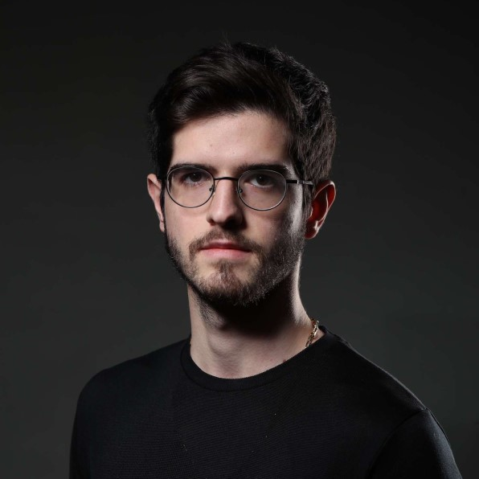

Marketing Director
Erhun Abbasli
Hey there! My name is Erhun Abbasli, and I am excited to share my story here. Originally from Azerbaijan, I came to Canada with a passion for film production. I studied at York University, earning my BFA in Film Production, which laid the groundwork for my love of filmmaking.
But I didn't stop there. My fascination extended beyond the camera and into the world of business and social media marketing. During my academic years, I transformed a small passion project into a thriving film community "Filmmking" on social media, connecting with 360K followers of content creators and filmmakers from around the world.
My journey also includes collaborations with major filmmaking brands, where I've had the chance to get creative, organize successful campaigns, and pay attention to the finer details. Now, as the Social Media Marketing Specialist at FoxWing Productions, my goal is to harness the potential of social media to elevate our cinematic adventures.
I'm on a mission to engage audiences, build connections, and explore the endless possibilities of storytelling.
Cheers,
Erhun Abbasli